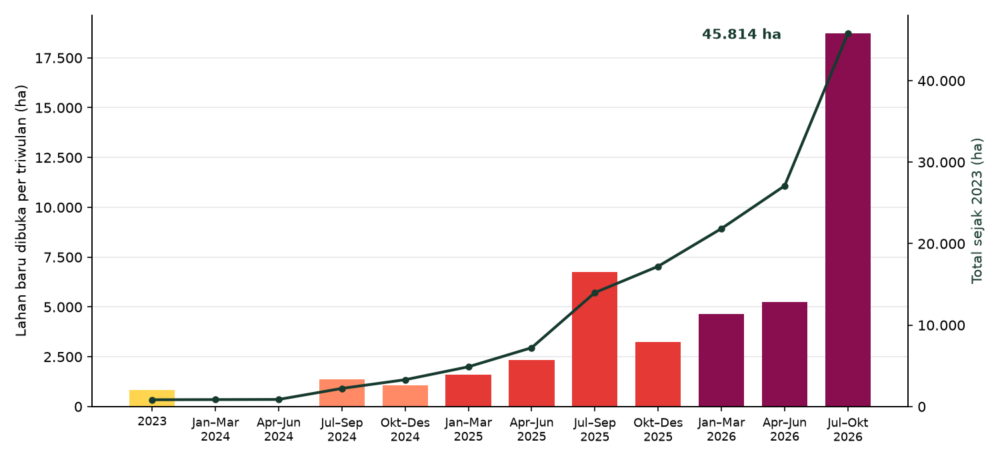

Pemantauan Pembukaan Lahan Food Estate Merauke per Triwulan, 2023–2026
Project ini berangkat dari temuan di project Kebakaran Hutan dan Lahan 2026, yang menunjukkan bahwa sebagian besar lahan terbakar di Papua bagian selatan berada di blok-blok yang baru dibuka.
Latar belakang
Kabupaten Merauke di Papua Selatan dikenal dengan bentang alamnya yang khas, berupa hutan dataran rendah, savana, dan rawa yang sangat luas. Sejak 2024, wilayah ini menjadi lokasi Proyek Strategis Nasional pangan dan energi, yang mencakup perkebunan tebu dan pencetakan sawah baru dalam skala ratusan ribu hektare. Rencana sebesar ini memunculkan pertanyaan yang wajar. Seberapa cepat lahan sebenarnya dibuka, dan ekosistem apa yang digantikan?
Dalam project kebakaran hutan dan lahan, citra Sentinel-2 di sekitar Merauke sudah memperlihatkan hamparan lahan terbuka dengan batas-batas lurus yang muncul hanya dalam beberapa bulan. Project ini melanjutkan temuan itu ke seluruh kabupaten. Pembukaan lahan dipetakan per triwulan sejak 2023, lalu dicocokkan dengan jenis ekosistem, tutupan hutan, dan status kawasan hutan.
Data yang digunakan
| Data | Format Data | Jenis Data | Sumber |
|---|---|---|---|
| Citra Sentinel-2 Level-2A (10–20 m), Juli 2022–Oktober 2026 | Raster | Sekunder | ESA Copernicus, melalui Google Earth Engine |
| Penyaring awan Cloud Score+ | Raster | Sekunder | |
| Tutupan lahan ESA WorldCover 2021 (10 m) | Raster | Sekunder | European Space Agency |
| Tutupan hutan 2020 (GFC2020) | Raster | Sekunder | European Commission JRC |
| Kawasan hutan (Juni 2026) dan areal pelepasan kawasan hutan | Vektor | Sekunder | Geoportal Kementerian Kehutanan |
| Persetujuan Penggunaan Kawasan Hutan (PPKH), Januari 2026 | Vektor | Sekunder | Geoportal Kementerian Kehutanan |
| Batas Kabupaten Merauke | Vektor | Sekunder | geoBoundaries (ADM2) |
Metode
Merauke punya musim hujan yang panjang dari sekitar Desember sampai April, sehingga citra pada bulan-bulan itu sering tertutup awan. Karena itu, citra Sentinel-2 digabung menjadi komposit untuk setiap musim kemarau (Juli–Oktober) dari 2022 sampai 2026, ditambah komposit per triwulan sejak Januari 2024. Bagian yang tertutup awan dibuang lebih dulu dengan Cloud Score+.
Pada setiap komposit, sebuah piksel dianggap baru dibuka jika vegetasinya sangat rendah (NDVI < 0,2), menunjukkan ciri tanah terbuka (BSI > 0,05), bukan air (MNDWI < 0), dan permukaannya cukup terang. Syarat terakhir ini penting di Merauke. Tanah yang baru dikupas tampak terang, sedangkan bekas kebakaran tampak gelap dan savana yang mengering masih menyisakan sedikit warna hijau, sehingga keduanya tidak ikut terhitung. Selain itu, lahan tersebut harus masih bervegetasi pada musim kemarau 2022 (NDVI ≥ 0,35), agar lahan yang sudah terbuka sejak lama atau terbuka secara alami tidak dianggap sebagai pembukaan baru.
Waktu pembukaan setiap piksel ditentukan dari triwulan pertama lahan itu terlihat terbuka. Bercak yang luasnya kurang dari 5 hektare dibuang, karena bercak sekecil ini umumnya berupa genangan yang mengering, bayangan awan, atau savana terbakar yang tersebar. Pembukaan yang tersisa lalu dicocokkan dengan jenis ekosistem sebelum dibuka, tutupan hutan 2020, fungsi kawasan hutan, areal pelepasan kawasan hutan, dan areal PPKH.
Hasil
Sejak 2023, sekitar 45.800 hektare lahan di Kabupaten Merauke telah dibuka, kira-kira seluas 80 ribu lapangan sepak bola. Pembukaannya berjalan sangat cepat dan terus menanjak. Pada 2023 hanya terdeteksi 839 hektare, lalu 2.457 hektare pada 2024 dan 13.917 hektare pada 2025. Pada 2026, meskipun baru sampai Oktober, luasnya sudah mencapai 28.601 hektare, lebih dari dua kali lipat tahun sebelumnya.

Lonjakan pada triwulan Juli–September sebagian dipengaruhi musim. Komposit musim kemarau paling bersih dari awan, sehingga lahan yang dibuka saat musim hujan sering baru terdeteksi pada kemarau berikutnya. Triwulan Juli–September 2026 juga sudah mencakup citra bulan Oktober.
Peta di bawah memperlihatkan kapan setiap bagian lahan mulai dibuka. Warna kuning menunjukkan pembukaan pada 2023, sedangkan warna merah tua menunjukkan pembukaan pada 2026. Geser penanda waktu untuk melihat bagaimana pembukaan menyebar dari triwulan ke triwulan, atau ganti citra latar untuk membandingkan kondisi 2022 dan 2026.
Pembukaan ditampilkan dalam sel sekitar 120 m agar blok kecil tetap terlihat saat peta diperkecil. Perbesar ke sekitar Jagebob di bagian timur untuk melihat blok-blok terbesar. Klik areal PPKH untuk melihat nama dan luasnya. Setelah peta diklik, gulir untuk memperbesar atau memperkecil.
Pembukaan tidak menyebar merata, melainkan terkumpul di tiga wilayah. Yang terbesar berada di sekitar Jagebob dan Ngguti Bob, dengan luas sekitar 23.800 hektare. Sekitar 15.500 hektare lainnya berada di sebelah utaranya, di sekitar Blandin Kakayo. Keduanya berupa blok-blok raksasa bersisi lurus dengan pola petak di dalamnya, ciri khas pembukaan perkebunan skala besar. Wilayah ketiga berada di sekitar Wanam, Distrik Ilwayab, seluas sekitar 4.100 hektare, yang memanjang di sepanjang jalur baru dari barat ke timur. Sisanya, sekitar 2.400 hektare, tersebar dalam bercak-bercak kecil.
Blok di sekitar Blandin Kakayo juga menjadi lokasi yang diamati dalam project kebakaran hutan dan lahan. Di sana, sekitar 5.798 hektare lahan terbakar pada Juli–Oktober 2026, dan sebagian besar berada di blok yang baru dibuka pada periode yang sama. Kedua hasil ini saling menguatkan, bahwa titik api di wilayah ini kemungkinan besar berasal dari pembakaran sisa vegetasi saat lahan dibuka.
Ekosistem apa yang digantikan?
| Tutupan lahan sebelum dibuka | Luas (ha) | Persentase |
|---|---|---|
| Hutan dan pepohonan | 40.464 | 88,3% |
| Rawa dan lahan basah | 2.483 | 5,4% |
| Savana dan padang rumput | 2.270 | 5,0% |
| Lahan pertanian lama | 534 | 1,2% |
| Mangrove | 51 | 0,1% |
| Lainnya | 13 | < 0,1% |
Tutupan lahan sebelum dibuka diambil dari ESA WorldCover 2021. Kelas hutan dan pepohonan mencakup hutan dataran rendah dan savana berpohon rapat.
Merauke sering digambarkan sebagai hamparan savana dan rawa yang cocok untuk dijadikan lahan pertanian. Namun lahan yang benar-benar dibuka sejauh ini justru sebagian besar berupa hutan. Hampir 9 dari 10 hektare pembukaan sebelumnya ditumbuhi pepohonan, dan data tutupan hutan JRC memberi hasil yang hampir sama, yaitu 40.099 hektare atau 88% pembukaan berada di lahan yang masih berupa hutan pada 2020. Savana dan rawa, yang selama ini menjadi gambaran umum wilayah Merauke, hanya menyumbang sekitar sepersepuluh dari total pembukaan.
Di kawasan apa lahan dibuka?
| Status kawasan | Luas (ha) | Persentase |
|---|---|---|
| APL hasil pelepasan kawasan hutan | 26.229 | 57,3% |
| APL lainnya | 16.325 | 35,6% |
| Kawasan konservasi | 1.551 | 3,4% |
| Hutan produksi yang dapat dikonversi | 975 | 2,1% |
| Hutan lindung | 368 | 0,8% |
| Hutan produksi tetap dan terbatas | 367 | 0,8% |
APL adalah Areal Penggunaan Lain, yaitu lahan di luar kawasan hutan. Fungsi kawasan hutan memakai peta Juni 2026 berskala 1:250.000, sehingga di sekitar batas kawasan bisa terjadi pergeseran beberapa ratus meter.
Sekitar 93% pembukaan berada di APL, dan lebih dari separuhnya berada di areal yang sebelumnya berstatus kawasan hutan lalu dilepaskan. Artinya, sebagian besar hutan yang hilang sudah lebih dulu diubah statusnya secara resmi sehingga boleh dibuka. Hanya sekitar 3.261 hektare atau 7% pembukaan yang masih berada di dalam kawasan hutan.
Pembukaan di kawasan konservasi tercatat 1.551 hektare, tetapi sekitar 1.289 hektare di antaranya ada di Pulau Kimaam yang hampir seluruhnya berupa rawa dan padang rumput. Perubahan di sana kemungkinan besar adalah rawa yang mengering atau terbakar saat kemarau, bukan pembukaan lahan. Taman Nasional Wasur di selatan juga relatif aman, dengan hanya sekitar 54 hektare bercak kecil yang terdeteksi di dalamnya. Yang lebih perlu diperiksa adalah 368 hektare pembukaan di hutan lindung, karena fungsi kawasan ini tidak bisa dipakai untuk kegiatan budi daya.
Di sekitar Wanam, hampir seluruh pembukaan lahan, sekitar 4.048 hektare, berada di dalam satu areal PPKH non-tambang seluas 54.621 hektare atas nama Kementerian Pertahanan, yang memanjang di sepanjang jalur barat–timur tersebut. Artinya, pembukaan di wilayah ini sudah memiliki persetujuan penggunaan kawasan hutan, dan baru memakai sekitar 7% dari luas areal yang disetujui.
Kesimpulan
Citra satelit memperlihatkan bahwa pembukaan lahan di Merauke berlangsung sangat cepat dan terus bertambah. Dalam waktu kurang dari empat tahun, sekitar 45.800 hektare lahan telah dibuka, dan lebih dari 60% di antaranya terjadi hanya dalam sepuluh bulan pertama 2026. Berbeda dari gambaran Merauke sebagai hamparan savana dan rawa, hampir 90% lahan yang dibuka sebelumnya berupa hutan. Sebagian besar pembukaan memang berada di APL atau di areal yang sudah dilepaskan dari kawasan hutan, sehingga secara status boleh dibuka. Namun ratusan hektare di hutan lindung dan hutan produksi tetap perlu diverifikasi.
Meski begitu, resolusi 30 m dan ambang indeks yang dipakai bisa melewatkan pembukaan kecil, dan lahan yang dibuka lalu cepat ditanami bisa jadi tidak sempat terlihat terbuka pada komposit mana pun. Sebaliknya, rawa yang mengering di musim kemarau masih bisa terhitung sebagai pembukaan, seperti yang terlihat di Pulau Kimaam. Awan pada musim hujan membuat waktu pembukaan cenderung bergeser ke triwulan kemarau, dan data 2026 baru mencakup sampai Oktober. Karena itu, angka 45.800 hektare lebih tepat dibaca sebagai batas bawah. Pembukaan juga masih terus bertambah setiap triwulan, sehingga pemantauannya perlu dilanjutkan dengan citra radar Sentinel-1 yang tidak terhalang awan, lalu dicocokkan dengan peta hak guna usaha untuk mengetahui perusahaan mana yang membuka setiap blok.
Berapa banyak karbon yang hilang dari pembukaan ini dihitung dengan data LiDAR GEDI di project Karbon Hutan yang Hilang dari Pembukaan Lahan Food Estate Merauke.
← View other projects